Mitigate Silent Expert Death in Ultra-Sparse MoE
This is a static copy of the original Notion page.
| Public Date | |
|---|---|
| Tags | MoE |
Hongye Jin, Linwei Li, Xiaotian Han, Xin Liu, Haoyang Wen, Sha Li, Chia-Yuan Chang, Tuo Zhao, Qingyu Yin, Binxuan Huang
Update Date: August 22, 2026 · 40 min read
1. Experimental Setup
- Training framework: Our experiments use Megatron-Core as the base framework, with the necessary modifications.
- Model architecture: Unless otherwise specified, most experiments in this article use the following architecture:
The model has 32 layers, with MLA and 16 attention heads. The first layer is dense; each of the remaining 31 MoE layers contains 768 routed experts plus one shared expert, with 8 routed experts activated per token (top-8). The router uses a sigmoid scoring function and DeepSeek-style aux-loss-free load balancing, with the expert-bias update rate fixed at 0.001. The activation function is SwiGLU.
To make the failure mode easier to expose, we use a model that is substantially sparser and relatively narrower and deeper than mainstream designs. It has roughly 60B parameters, with about 1.0B active parameters per token, excluding the LM head and embeddings. [For some small experiments, we use a 5B, 32-layer model with 512 experts and top-8 routing. We also have an experiment on a 180B model at the end. The relevant details are provided where those results are discussed.]
- Optimizer: Unless otherwise noted, we use AdamW with a weight decay of 0.1. Muon experiments are identified explicitly. We use a cosine learning-rate schedule over 90,000 training steps, with 2,000 warm-up steps.
- Training data: We use a mixture of open-source datasets, including high-quality web, code, math, and STEM data, broadly following a standard pretraining recipe. Sequences are packed to a length of 8K.
2. Silent Expert Collapse in Lower MoE Layers
2.1 Observation
During ultra-sparse MoE training, we observe that after an initial period of growth, the weight norms of routed experts in lower MoE layers begin to decline, eventually even falling below of their initial values, while the shared expert remains within a normal norm range. This form of silent expert collapse leaves virtually no trace in the usual training signals: both training and validation losses continue to decrease normally, no unusual spikes appear, and no distinctive warning appears in commonly monitored load-balancing metrics. As their weight norms shrink, the routed experts become functionally inactive. Masking every routed expert in the affected MoE layer causes almost no degradation in model quality. In other words, nearly all computation spent on the routed experts in such a layer is wasted; the layer has effectively degenerated into a dense layer (the shared expert) or even a null layer.
As shown below, in a long real training, routed-expert collapse is particularly severe in the first MoE layer. Higher MoE layers remain much healthier, with their expert weight norms concentrated within a relatively narrow range.
{kind=link}
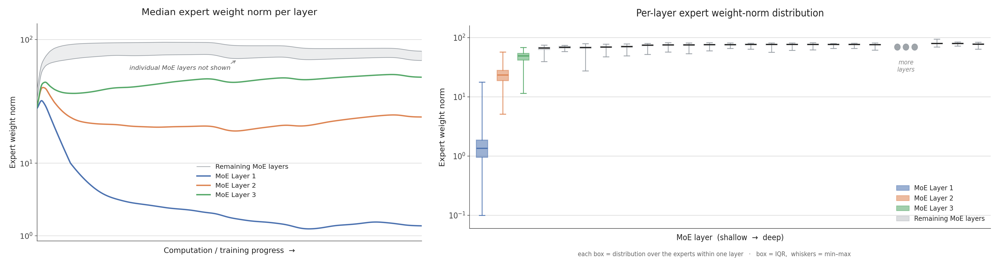
We can reproduce similar behavior with our experimental configurations in Section 1:
{kind=link}
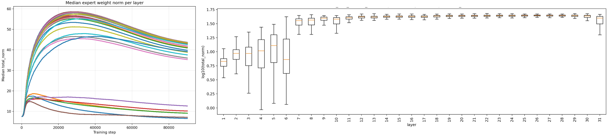
[Exp1] This run also serves as the baseline for most subsequent 60B experiments. It uses a batch size of 384 and approximately 280B training tokens. Its early MoE layers collapse and the expert norm is ~ of that in higher healthy layers.
2.2 Why Do Lower-Layer Experts Silently Die?
At the most direct mechanistic level, the persistent decline in expert weight norms indicates that the experts in early layers do not receive sustained, effective updates. Weight decay therefore keeps shrinking their norms until the experts die completely. Intuitively, lower LLM layers already receive less diverse learning signals, and the signals that drive routed-expert learning and specialization are relatively weak [2, 27, 28]. This leads us to ask which factors determine whether lower-layer experts can learn effectively. 💬
2.2.1 Shared-Expert Competition: Not Critical
Our model includes a shared expert [1], originally introduced to stabilize expert learning signals and encourage expert specialization. The output of an MoE layer is defined below, where is a scaling factor set to 2.5 and denotes the output of a selected routed expert:
We notice that the shared expert’s norm remains entirely normal. This raises the possibility that, in an extremely sparse regime, the shared expert may dominate the allocation of useful learning signals—effectively “absorbing” them. The shared expert sees every token, whereas each routed expert receives only a small number of tokens per update, making its gradients noisier and less stable. The model may therefore prefer to place most useful functionality in the shared expert. To test this hypothesis, we vary and examine how the relative contribution of the shared expert affects routed-expert learning: 💬
Inline comment
- Hongye JinAn early, initial, quick test. The model config is a bit differnt from others
{kind=link}
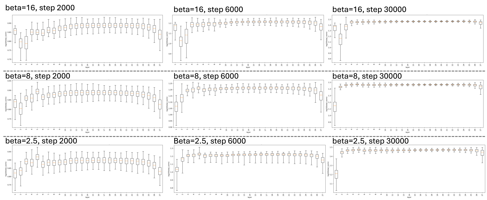
These results show that the scaling factor strongly affects routed-expert learning and can substantially change which layer undergoes expert collapse. Yet even a very large scaling factor—one that heavily emphasizes the routed experts’ contribution—does not prevent collapse. Useful learning signals appear to exhibit a strong seesaw effect, as though different MoE layers were competing for a limited supply of signal. With = 16, unlike with = 2.5 or 8.0, the first MoE layer no longer collapses; instead, the second MoE layer takes its place and collapses.
We therefore explore a more fine-grained schedule for the scaling factor. Our reasoning is that if a large allows the first MoE layer to avoid collapse and develop meaningful specialization, then reducing later might also allow the second layer to avoid collapse and learn useful functions. Based on this idea, we design a new experiment:
- use a scaling factor of 16 for 0~4,000 steps, then switch to 2.5 after step 4000:
{kind=link}
{kind=link}
{kind=link}
The result is clearly much closer to the fixed scaling-factor-16 run, exhibiting the same pattern, and is very different from the runs with scaling factors of 8 or 2.5. This suggests that the expert-learning dynamics of a given MoE layer are largely determined very early in training—around step 2K. Based on this observation, we add another experiment:
- Steps 0–1,500: = 16; steps 1,500–2,500: = 8; after step 2,500: = 2.5 —> the resulting learning pattern is closer to that of the fixed- = 2.5 run.
{kind=link}
{kind=link}
{kind=link}
Key Takeaways:
- The shared expert is not the key factor. Reducing its relative contribution does not prevent expert collapse.
- The MoE layer with the most severe collapse shifts as the scaling factor changes. This suggests that early training may involve either cross-layer competition for useful learning signals or competition for resources in the residual stream.
- Expert and router behaviors exhibit a critical period that largely determines the subsequent trajectory of expert learning and specialization. Put differently, during this period the model establishes dependencies on particular lower-layer representations.
2.2.2 Data Quality and Batch Size: A Modest Effect
Because this issue concerns gradient stability and quality, a natural question is whether the training dynamics would change if the data provided more stable, persistent gradients or if each expert saw more tokens. We therefore conduct one controlled comparison for data quality. Throughout training, we track (1) how the median expert norm in each layer evolves, and (2) the final distribution of expert norms in each layer, including its min-to-max span.
- Lower-quality data: Increase the proportion of general web data and reduce the proportion of reasoning and math data.
{kind=link}
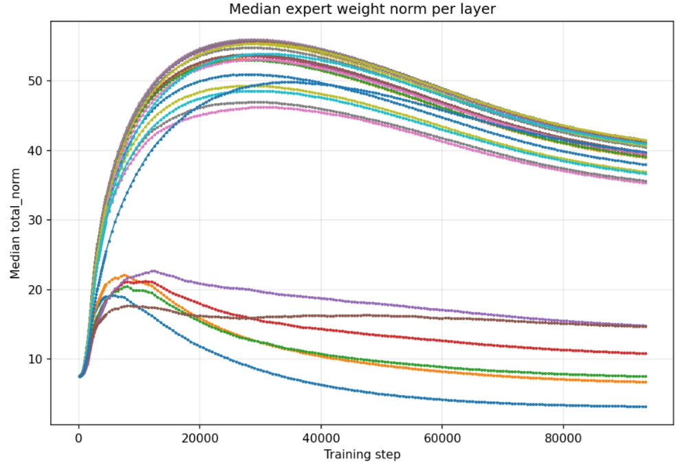
{kind=link}
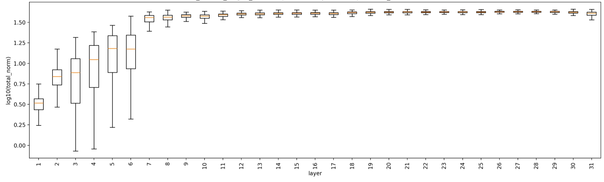
- Larger batch size / more data: Use the same data mixture as Exp1, increase the batch size to 2.7x, and adjust the learning rate and related settings accordingly, for approximately 700+B training tokens.
{kind=link}
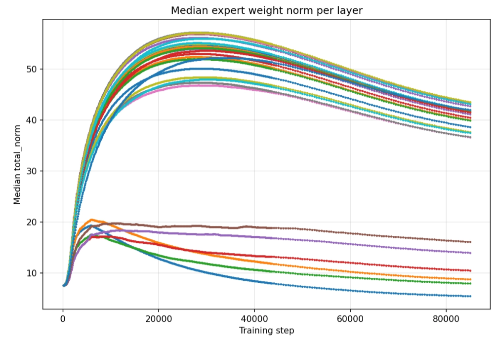
{kind=link}
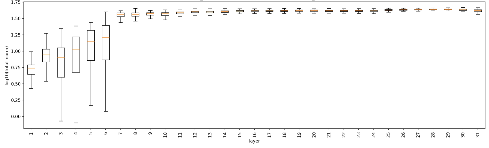
The first MoE layer provides a clear example: Lower-quality data collapses faster than Exp1 and is more severely collapsed at the same training step. By contrast, the overall trend of lower layers in the larger-batch-size setting appears broadly similar to that in Exp1, except that layer6 is a bit better.
Key Takeaways:
- Data quality and composition affect the ability of early-layer experts to remain healthy during training, but they do not fundamentally change this behavior.
- Batch size has little effect on expert training dynamics.
2.2.3 Load Balancing: Not the Primary Cause
It is less likely that load balance is the key reason for such silent collapse, since imbalance usually affects experts within a layer rather than systematically eliminating the whole layer. But we still want to check how load balance influences the collapse behavior, considering that it is one of the core topics for MoE training.
We used DeepSeek-style aux-loss-free load balancing. It takes the following form:
During training, we monitor load balance using MaxVio and MinVio. Lower values are better:
Aux-loss-free load balancing together with a sigmoid router can eventually restore balanced assignments—as long as the expert-bias gap exceeds 1.0, it can always overturn the routing decision. Although at the end of training, the load balance metrics are normal, we saw extremely high MaxVio in the early training stage. It is unclear whether the imbalance at the beginning of training will destroy experts and result in early-layer collapse.
We implemented an adaptive bias-update scheme called QB—Quantile Balancing—to achieve a strong balance capability. The core idea of QB is to balance expert loads while preserving the router's original affine scores as much as possible. To evaluate the method under its strongest setting, we used the full-batch variant of QB. This version is relatively slow, and for a full training run, we tested it only on a 5B model variant obtained by scaling down the modules, batch size, and other dimensions of the 60B configuration:
{kind=link}
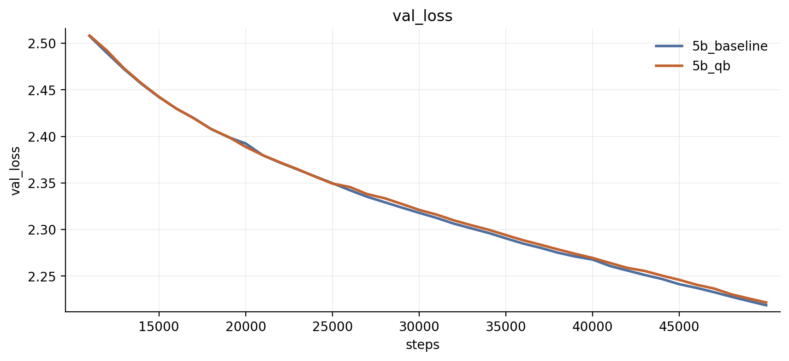
{kind=link}
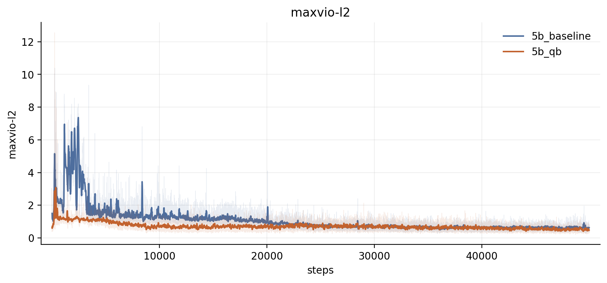
{kind=link}
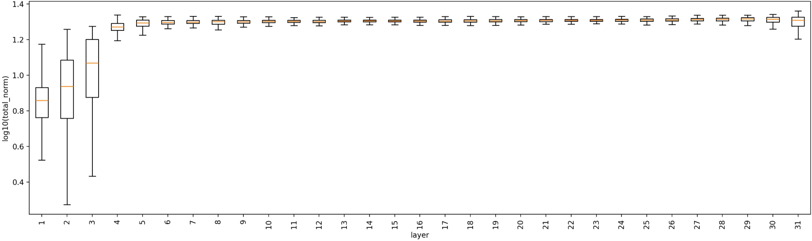
{kind=link}
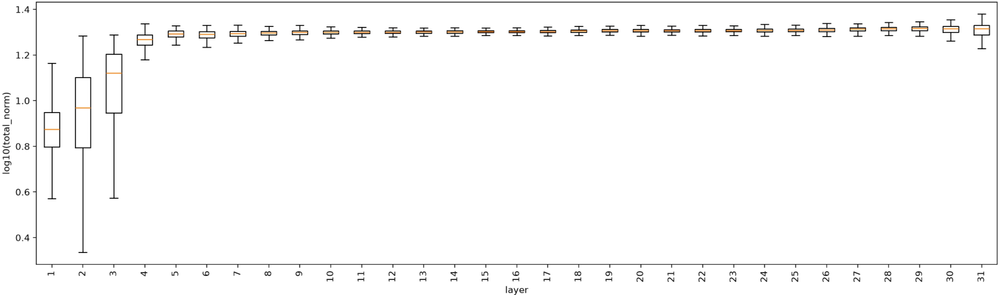
QB clearly improves load balance early in training. However, that improvement does not translate into a better validation loss—the difference is at step 50,000—and the expert weight norms also appear broadly similar to the baseline. 60b experiments with stronger balancing can be found in Appendix A. Quantile-Balance (QB) on a 60b model, and we had a similar observation:
Key Takeaways:
- Better balance does not noticeably improve early-layer expert collapse.
2.2.4 Routing Instability: Probably Related
The hypothesis is that in the early stage of MoE training, when the useful learning signal is weak, even a small perturbation can cause a large change in the router's decisions. Tokens presented under similar conditions may therefore fail to route consistently to the same or similar experts. This routing jitter makes it harder for experts to receive stable gradients, leaving them less capable and less semantically specialized; that, in turn, further intensifies the jitter. Finally, the unstable learning signal along the way can prevent the router's affine scores from meaningfully predicting expert suitability and prevent the experts from developing genuine specialization or distinct functions. Deprived of useful updates, they are eventually driven toward zero by weight decay.
Hence, we collected data on router behavior in training. We monitored the top-8 retention ratio. For a checking interval , the top-8 retention is defined as a ratio of kept experts between the two steps for each token with the same input: . Lower retention means that expert selection changes more frequently.
{kind=link}
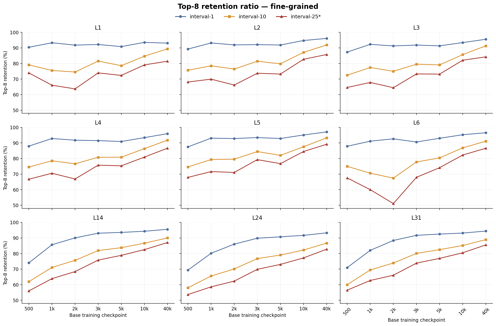
The fine-grained short-range (interval-1, interval-10) jitter test shows no obvious difference between low layers and high layers, while high layers are even worse at the beginning. When it comes to interval-25, L6 shows a dip at step 2000, which aligns with its expert norm Figure 2.
{kind=link}
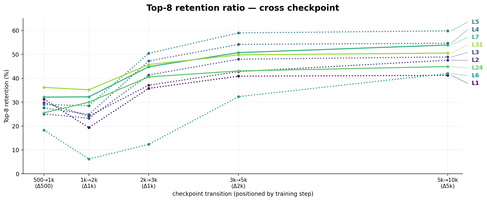
We checked the same retention metric applied across real pretraining checkpoints to have a clearer observation. Retention is far lower at this resolution (6–60%). There is a common trough at 1k→2k for shallow layers, and L6 even collapses to 6.2% — nearly no expert survives — independently reproducing the instability the fine-grained sweep flags at the same layer and window. Retention of higher layers gradually increases.
Key take-aways:
- This coincidence between retention and expert norm suggests that early layers’ routing decision instability could be one of the reasons behind collapses.
2.2.5 Infrastructure Behavior for Unselected Experts: Not the Cause
After completing most of the experiments, we realized that Megatron's gradient-handling behavior might introduce another effect. Megatron preallocates a zero-filled gradient buffer. When the optimizer sees , it still applies weight decay and advances the momentum and variance states; it skips the corresponding tensor only when .
This creates an implementation choice for an expert that happens to receive no tokens in a global batch:
- : continue applying weight decay and updating the momentum and variance states. This is Megatron's default behavior.
- : skip the momentum and variance updates for this step and do not apply weight decay.
Some other open-source frameworks, such as PaddlePaddle, behave like Megatron. Native Hugging Face implementations, by contrast, leave the gradients of unselected experts as , causing AdamW to skip those experts for the step.
The logs from the beginning of Exp1, before load balance has been established, show that a substantial number of experts receive no tokens at all. This count falls quickly afterward, but the effect is not entirely negligible:
{kind=link}
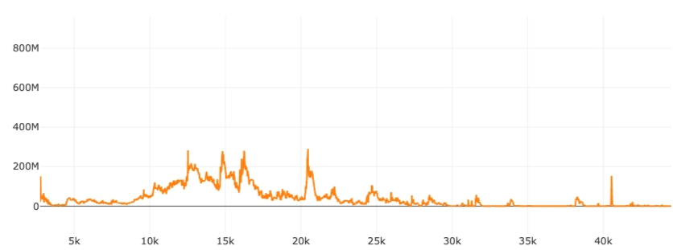
Modern LLM training typically uses much larger batches, so an expert is unlikely to receive no tokens at all. Nevertheless, as a sanity check, we ran a quick experiment on the 5B variant. Its smaller batch and fewer tokens per step should amplify any effect from completely unselected experts:
{kind=link}
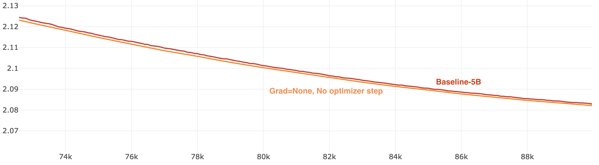
{kind=link}
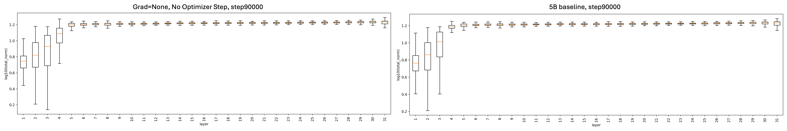
{kind=link}
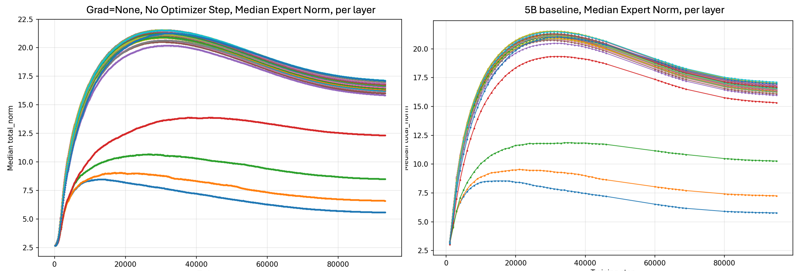
The validation loss is essentially unchanged (, a marginal improvement if anything), and the collapse of early-layer experts does not appear to be rescued.
Section Summary
Taken together, these experiments and analyses suggest that this form of early-layer MoE collapse is primarily driven by the weak, unstable learning signal available to lower-layer MoE experts, while its relationship to MoE load balance and many other factors is not significant.
3. Our Interventions and Findings
In this section, we share our practice to mitigate this expert collapse and more interesting findings.
3.1 Use a Smaller Learning Rate for the Router
With the observation of 2.2.4 Routing Instability: Probably Related, we try to reduce such instability to see whether it will help. Recall that aux-loss-free routing uses a bias term to control load balance; there are two sources of instability: bias updating and learning of the router.
Bias Updating
We reduced the bias updating rate by , from . At this updating rate, the routing perturbation from bias is marginal.
{kind=link}
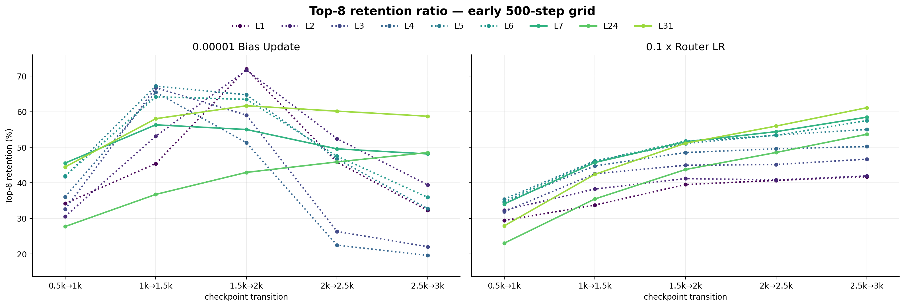
However, as we show above, this does not mitigate the router instability. Compared to Figure 5, the results are even worse. We also tried other methods to mitigate potential instability from bias updating: using a heuristic soft bias update and adding momentum to the bias update (in the appendix: Appendix B. Other effort on Router Stability Improvement). Both failed to save collapsed experts.
These results imply that the routing instability may come from the learning of the router.
Learning of Router
The routing instability is from the router itself, which is responsible for assigning a proper score to a token-expert pair. During training, its scores for token-expert pairs might change too much. We adopt the typical way to reduce training instability in the router: reducing the learning rate. We decreased the learning rate of the router to of its original learning rate while keeping the LR of other modules unchanged[Exp2]:
{kind=link}
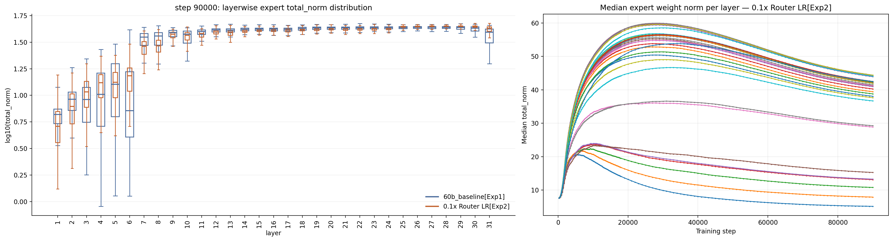
{kind=link}
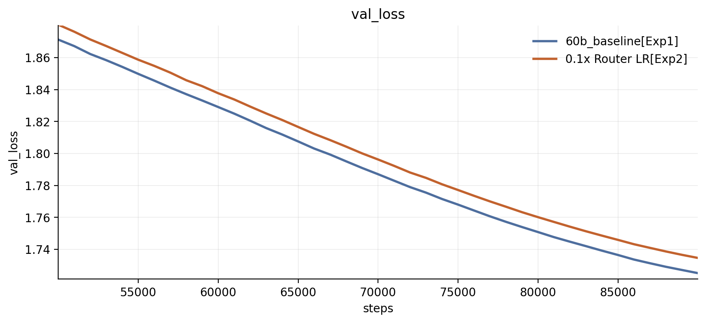
Compared with those in Exp1, L3~L6 are apparently healthier, especially L6. But low-layer collapse is not mitigated; the first MoE layer L1 is even worse (). Exp2 does not show a validation advantage, while evaluation on MMLU (Exp1: 0.5162, Exp2: 0.5399 ) and MMLU-pro (Exp1: 0.1899, Exp2: 0.1965) shows it is a bit better.
Key Takeaways:
- The training dynamics of the router matter. Shallow-layer training dynamics improve a bit with a smaller learning rate ( of the main learning rate). We should carefully tune the learning rate ratio between the router and the main model.
- But it still does not fully recover all layers. In our experiments, the first few MoE layers still lag behind.
3.2 Switching to Muon
We then looked to open-source models for clues. Among models released before April 2026, the development of early-layer experts appeared to depend largely on one choice: whether the optimizer was Muon or AdamW.
{kind=link}
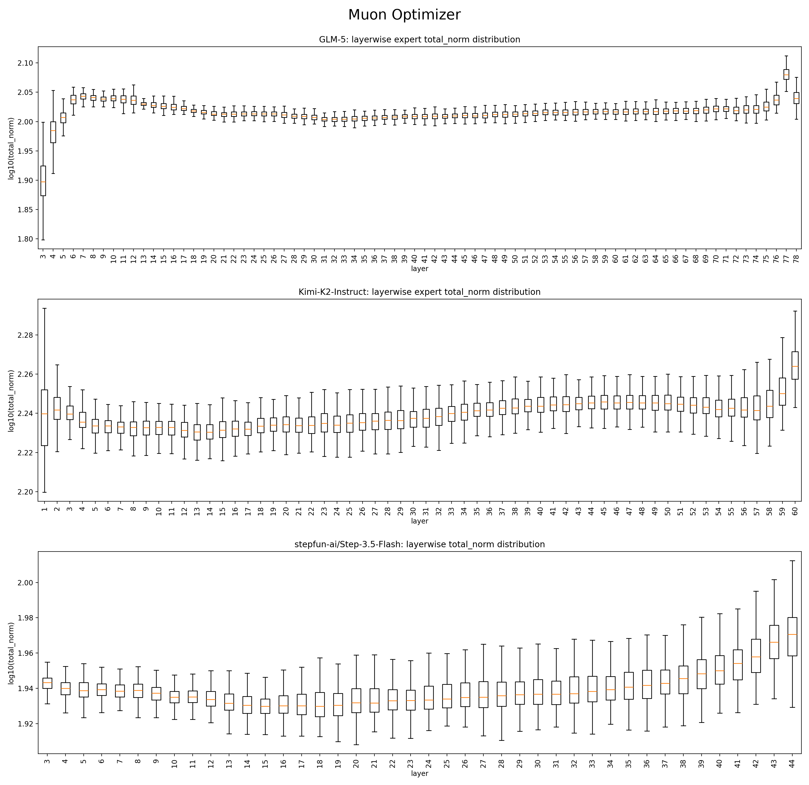
Kimi-K2: the first layer is a dense layer
Step-3.5-flash: first 2 layers are dense layers
{kind=link}
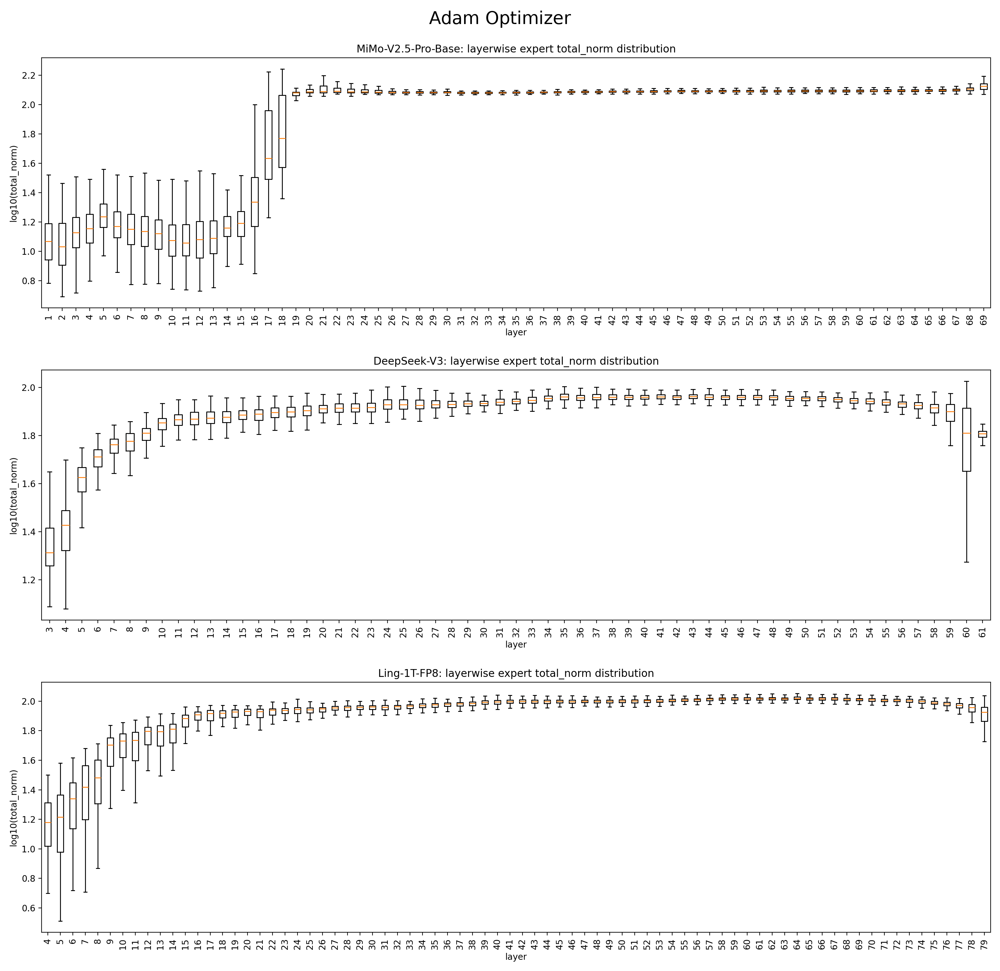
DeepSeek-v3: first 3 layers are dense layers
Ling-1T: first 4 layers are dense layers
With Muon, expert norms were generally concentrated in a relatively narrow, healthy-looking range. With AdamW, either the first few layers were dense or the expert norms looked much less healthy and far more dispersed. Intuitively, Muon may help preserve experts by retaining directions that would otherwise be washed out. [After this project, we conducted a more comprehensive analysis of open-source models: Appendix F. Open-Source Models ]
Motivated by these observations from open-source models, we tested whether Muon could solve our problem. We used the Kimi variant of Muon, which applies RMS matching, QK Clip, and decoupled weight decay. Muon was used for parameters associated with linear transformations—FFNs, including both dense FFNs and experts, and attention—while all remaining parameters were optimized with AdamW. The model configuration and training configuration are the same as before.
Whether Muon should also be applied to the router weights is less straightforward. GLM-4.5, GLM-5, and Moonlight all use Muon for the router. In an ordinary hidden linear layer, both the input and output are typically dense hidden representations. Muon's theoretical motivation treats the weight matrix as a linear operator between two approximately Euclidean feature spaces.
For a router, however, , and the output is not a feature representation in the usual sense. Moreover, the expert axis is invariant to permutation, but not to the arbitrary rotations allowed for an ordinary hidden-feature axis. Applying Muon to the router pulls the update norm of each expert's router row toward a similar scale and encourages updates to different rows to be as orthogonal as possible. This may prevent a small number of updates from dominating the router and keep some expert rows from receiving persistently tiny updates. On the other hand, Muon couples the updates of different expert rows, so an update associated with one expert can have uncertain effects on the others.
3.2.1 Two Variants: Router Optimizer Choice Muon vs. AdamW
With these tradeoffs in mind, we trained two variants: Muon + AdamW Router [Exp3] and Muon + Muon Router [Exp4]. The results are shown below.
{kind=link}
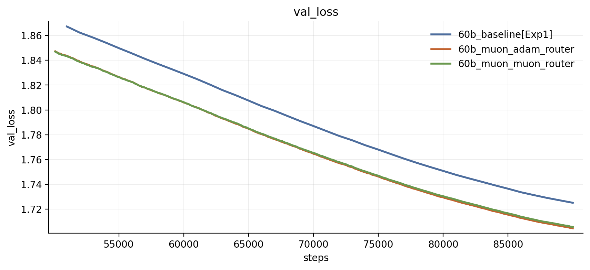
{kind=link}
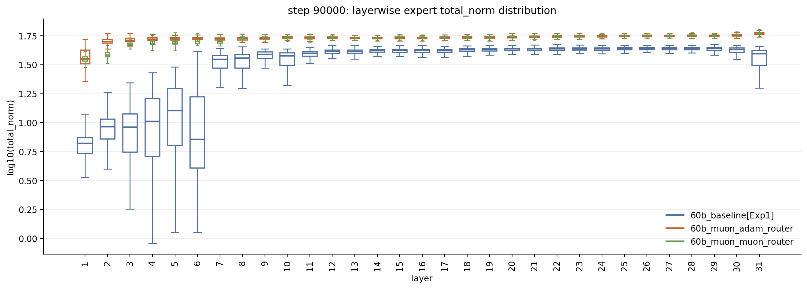
{kind=link}
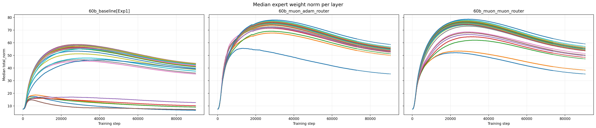
After replacing AdamW with Muon:
- Expert weight norms remain healthy, with no catastrophic decline.
- Validation loss is substantially lower, corresponding to roughly 10% savings in training steps.
- Under this experimental setup, the Muon and AdamW routers show no clear difference in validation loss.
At this point, every result from Muon looked favorable and matched our intuition. Even when the accumulated momentum is very small, its singular values will generally not be exactly zero. Orthogonalization then brings the update directions to roughly the same scale, allowing Muon to retain relatively weak signals:
We soon found, however, that the Muon-trained models had poor load balance. The rough ordering was AdamW Muon + Muon Router Muon + AdamW Router. Consider Layer 1 (the first MoE layer) and Layer 7 (the seventh MoE layer):
{kind=link}
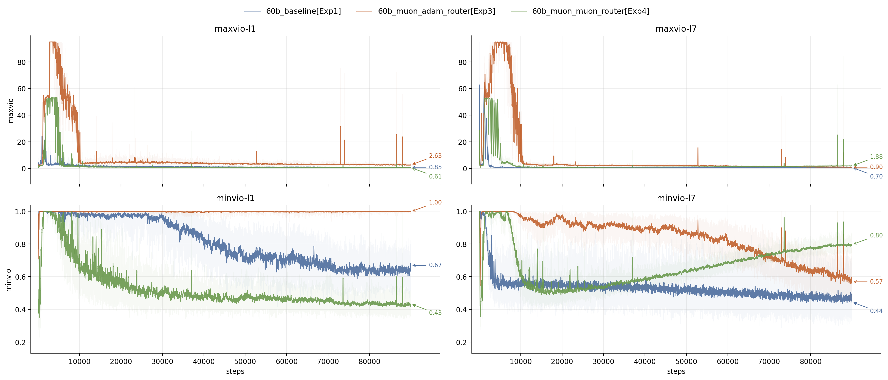
Layer 1 exhibits extremely large MaxVio early in training. Exp3 even briefly saturates, meaning that some experts are selected by every token. Exp4 is better, but is still substantially worse than AdamW early in training. Layer 7 shows the same pattern. MinVio tells the same story. Throughout training, Exp3 always has some experts in Layer 1 that receive extremely few tokens (approximately 1.00—not exactly 1, but very close).
Recent analytical work has offered partial explanations for why Muon + AdamW Router may have worse load balance than Muon + Muon Router [4, 5, 6]. It still does not fully explain the magnitude of the ordering AdamW Muon + Muon Router Muon + AdamW Router—especially why changing the model body from AdamW to Muon while leaving the router on AdamW degrades load balance so sharply. This question is outside the scope of this article, so we do not pursue it further here.
3.2.2 Why can Muon mitigate collapse? matters
If a group of experts truly receives very few tokens for an extended period, how could all experts look healthy w.r.t. their norms? This strongly motivated us to take a closer look at the optimizer's states to figure out what the real update under Muon is and how it differs from AdamW.
{kind=link}
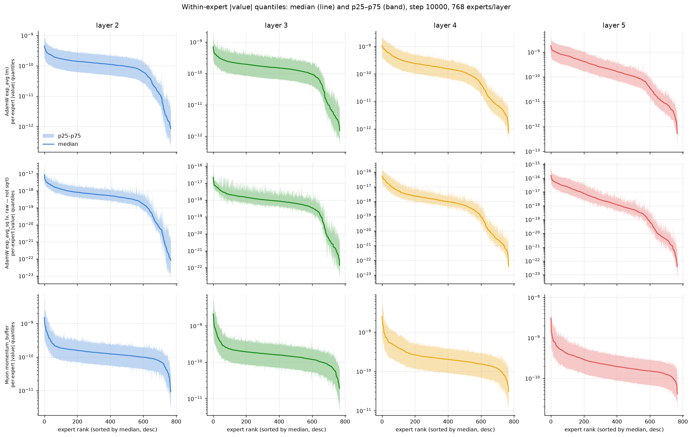
We extracted the optimizer states of Exp1 and Exp4 at step 10000. The lower-layer MoE expert momentum is of roughly the same order of magnitude in both runs: Muon does not substantially increase the strength of the stable signal in the lower layers. Even the evolution of this signal as training progresses is similar in the two runs. Surprised by this finding, we further checked the evolution of optimizer states as training progressed:
{kind=link}
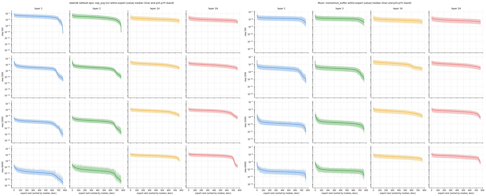
Compare the two runs:
- Under both AdamW and Muon, the shallow-layer momentum continues to collapse, while the deeper layers remain nearly unchanged throughout training. By step 40000, shallow-layer momentum is three orders of magnitude smaller than in the deeper layers. AdamW's second moment shrinks simultaneously, indicating that the gradient itself is collapsing and that nearly all sustained learning pressure is concentrated in the middle and upper layers.
- The collapse occurs in the same layers and follows the same timeline, but it is a bit more severe with AdamW. From step 500 to step 40000, Layer 1 momentum under AdamW falls by a factor of 2,700 (median: 3.4e-08 1.3e-11), compared with a factor of 290 under Muon (median: 1.4e-08 4.7e-11).
The continued decay under both optimizers suggests that the model itself progressively abandons the lower layers during training; the phenomenon is not primarily caused by optimizer behavior.
We therefore examined the shared experts—whose weight norms do not shrink—as a natural router-free control group. Their optimizer states nevertheless reproduce the same shallow-layer gradient dead zone (Layers 1–5, with the valley emerging around step 2000) and the same long-term stability in deeper layers:
{kind=link}
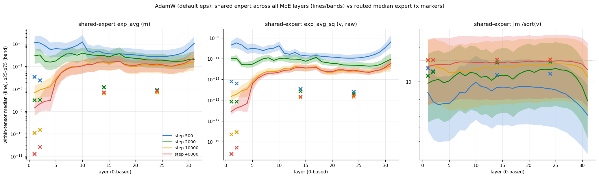
For the shared expert in Layer 1, momentum falls from 1.2×10⁻⁶ at step 500 to 1.4×10⁻⁹ at step 40000—a factor of roughly 830x—while falls by the corresponding squared factor. In Layers 14 and 24, momentum remains essentially unchanged from step 2000 onward at approximately 1.5×10⁻⁷. This exactly matches the time-by-layer pattern of the routed experts, reinforcing the earlier conclusion: what collapses is the signal backpropagated into the shallow layers.
We can also see that the update magnitude is nearly identical for shared and routed experts—the only difference is the relative magnitudes of and . Now, the reason for the difference emerges: at this scale, it is which caps the signal and AdamW's usually overlooked can no longer be ignored. At step 10000, under AdamW lies between 1e-8 and 1e-12 in Figure 12, reaching values far below the conventional . Epsilon is therefore no longer merely preventing division by zero; it is actively capping the actual update. The difference in the scale of explains the difference between shared/routed experts, since the shared expert’s is usually 30–100× that of a routed expert [Appendix E. Shared vs. Routed Experts: Estimating the Relative AdamW √v and ε] and their tolerances to are different.
It is the same reason why expert weight norms do not die under Muon. In our Megatron implementation, the default value inside the Muon iteration is . If we define the onset of significant epsilon suppression as the point where the update magnitude is reduced by half, then for the same momentum matrix the roughly equivalent AdamW value should be around to [Appendix D. Muon vs. AdamW: Estimating Equivalent Epsilon (10⁻⁷ in Muon ≈ 10⁻¹¹ in AdamW)].
Key Takeaways:
- The Muon optimizer can lift weak signals during its orthogonalization. It successfully prevents early-layer weight norms from collapsing.
- One reason is that, compared with AdamW’s epsilon, Muon’s epsilon caps less of the signal when epsilon is around the same magnitude.
- But in a real heavily overtrained regime, which is common for real models, whether Muon can provide a more profound mechanism to help early-layer experts learn is still unclear.
3.3 AdamW with a Smaller Epsilon ()
Based on these observations, we added two experiments with a smaller . For expert parameters, we set ; all other parameters, including the router, retained the default value of 1e-8:
First 6 MoE layers with = 1e-12[Exp5-1]
All MoE layers with = 1e-12[Exp5-2]
{kind=link}
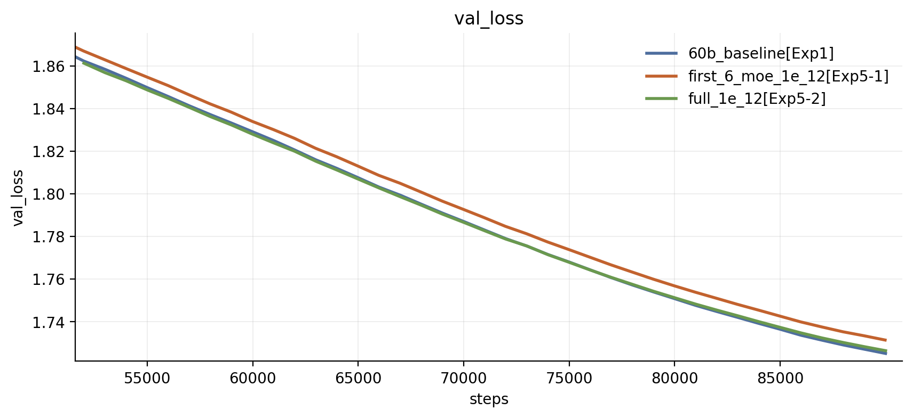
{kind=link}
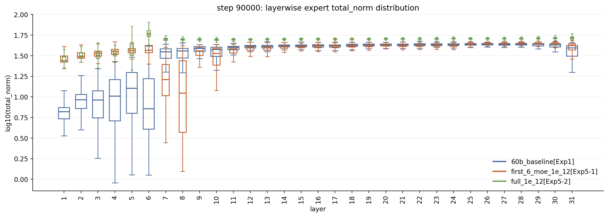
{kind=link}
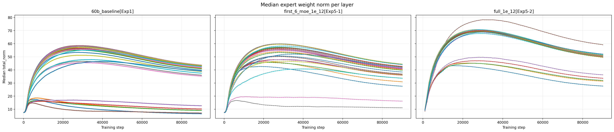
Apparently, shallow-layer expert collapse is stopped. Although the effect is not reflected in validation loss, the smaller clearly rescues expert norms. Exp5-1 provides an especially clear example: setting saves the first six MoE layers, while the immediately following seventh and eighth MoE layers become the new collapse hotspots, albeit much less severely than in the baseline. This echoes our earlier hypothesis about functional competition across layers Section 2.2.1. It also suggests that the extremely small momentum still contains some signal that is genuinely useful to lower-layer function, leading to a new redistribution of function across layers. The development of upper layers is much less sensitive to epsilon.
One caveat remains. Just as the Muon experiments showed the model systematically neglecting lower MoE layers, reducing does not fundamentally change the model's tendency to under-optimize those layers.
{kind=link}
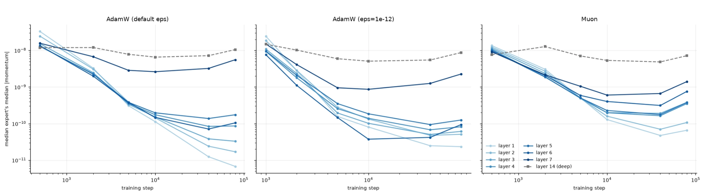
Exp5-2 now follows a trend more similar to Muon, yet its lower-layer momentum is still extremely small late in training. In a sense, an oversized merely makes this loss of training signal visible.
We next evaluated MMLU and MMLU-Pro while masking routed experts to check those early layers' functionality:
Table 1. MMLU and MMLU-Pro under layer-wise routed-expert masking for AdamW, Muon, and small-ε AdamW variants. Using MMLU and MMLU-Pro as thresholds, the setting which causes significant regression is marked in red.
| MMLU / MMLU_Pro | 60b_baseline[Exp1] | 60b_muon_adam_router[Exp3] | 60b_muon_muon_router[Exp4] | first_6_moe_1e_12[Exp5-1] | full_1e_12[Exp5-2] |
|---|---|---|---|---|---|
| Baseline | 0.5162 / 0.1899 | 0.5372 / 0.2089 | 0.5485 / 0.2331 | 0.5407 / 0.1962 | 0.5402 / 0.2021 |
| Mask L1 Routed | 0.5179 / 0.1910 | 0.5377 / 0.2088 | 0.5489 / 0.2364 | 0.5397 / 0.1923 | 0.5390 / 0.2023 |
| Mask L1-L2 Routed | 0.5195 / 0.1883 | 0.5353 / 0.2061 | 0.5484 / 0.2325 | 0.5400 / 0.1925 | 0.5356 / 0.1999 |
| Mask L1-L3 Routed | 0.5165 / 0.1861 | 0.5338 / 0.2094 | 0.5431 / 0.2269 | 0.5367 / 0.1920 | 0.5267 / 0.1932 |
| Mask L1-L4 Routed | 0.4983 / 0.1794 | 0.5271 / 0.2061 | 0.5355 / 0.2222 | 0.5338 / 0.1902 | 0.5042 / 0.1888 |
| Mask L1-L5 Routed | 0.3537 / 0.1390 | 0.5141 / 0.2015 | 0.5313 / 0.2222 | 0.5075 / 0.1878 | 0.3899 / 0.1474 |
| Mask L1-L6 Routed | 0.2426 / 0.1118 | 0.5103 / 0.1961 | 0.5169 / 0.2154 | 0.4709 / 0.1706 | 0.3833 / 0.1419 |
The results show that neither Muon nor AdamW with a very small materially changes the model's weak dependence on lower MoE layers. Masking the routed experts in roughly the first three MoE layers has essentially no effect on the model. This provides further support for our earlier analysis: both Muon and AdamW with a small only make the lower MoE layers look rescued. 💬
Inline comment
- XiaotianThis result suggests that model parameter utilization cannot be assessed solely based on weight norms.
Somewhat unexpectedly, AdamW with a very small nearly matches Muon's task metrics, and both substantially outperform the baseline, even though neither Exp5 run has an advantage in validation loss. This result may simply reflect noise or the known fact that similar pretraining loss or perplexity need not preserve downstream-task rankings [9, 10, 11]. It may also indicate that some of the signals suppressed by a large do contain meaningful information.
Prior work has treated as part of broader optimizer-scaling rules: SDE-derived batch-size scaling, width-dependent optimizer scaling, and practical MoE ablations [7, 8, 2]). Some existing works [29, 30, 31] also mention the importance of a sufficiently small , even as small as 1e-15. In our experiments, however, the 1e-8 default looks good for all modules except routed experts. We do not yet know the long-term effect of such a small on huge, ultra-sparse MoE LLMs. It remains unclear whether these functionally "collapsed" experts would eventually recover during the late stages of heavy overtraining, as their weights themselves still appear "healthy." This is one of the major limitations of our current experiments [section 5].
Even if these functionally "collapsed" experts are finally saved, we are not saying that applying a super small to AdamW is the solution in ultra-sparse MoE training. Its effect on large LLM training is controversial. A small epsilon might result in unstable training as discussed in [32, 33], but it may also prevent other spike patterns as discussed in [34]. 💬
Inline comment
- Hongye JinThis paper observed similar early layer small gradients, although on dense models.
Key Takeaways:
- AdamW continues to reduce expert norms because the epsilon introduced to prevent division by zero caps weak signal in early MoE layers and allows weight decay to dominate. Epsilon should not be chosen casually across optimizers or across models. A small enough can make routed experts look rescued.
- The model itself provides only a very weak signal to shallow MoE layers, and it is difficult to attribute that weak signal directly to routing (the two are not entirely unrelated: top-k selection introduces discontinuities and makes learning harder, which may lead the model to avoid placing learning pressure on the lower layers, at least temporarily).
- With a sufficiently small , AdamW can approximately match Muon's training dynamics. However, neither Muon nor a smaller epsilon addresses the root problem: the weak signal.
All experiments below still use the conventional AdamW setting of .
3.4 LM Loss as Auxiliary Loss (LLAL) — The proposed method
The preceding experiments show that lower MoE layers receive very little learning pressure during ultra-sparse MoE training. We could place fewer experts in shallow layers or tune the learning rate and weight decay layer by layer, but these approaches ultimately reduce to hyperparameter search. We wanted a general method that would genuinely help when training increasingly sparse MoEs. 💬
Inline comment
- SeanNot particular to the the MoE layers, Section 3.2 also shows more Adam-trained dense+sparse mixed models: mimo, deepseek, and ling.
If the effective signal is too weak, the natural response is to introduce a new signal for the lower MoE layers. Ideally, this signal should be (1) persistent and stable, (2) minimally disruptive to the model's primary learning objective, and (3) conducive to expert differentiation. Several existing studies add explicit regularizers or auxiliary losses to encourage MoE specialization and better routing [12, 13, 14]. 💬
Inline comment
- SeanWe suspect the weak signal issue is inherent to both MoE and dense architectures. However, having observed it in both public and in-house MoE models, we tailored and validated our solution specifically for MoE. Its validity on dense architectures warrants further investigation.
We realized, however, that the language-modeling loss itself already has all of these properties. The motivation is straightforward: lower layers are usually treated as lexical layers, but apparently, the current results imply that even simple lexical-level information is not learned well. Considering that many next-token predictions are simple enough—e.g., predictable from n-grams—that they should not require a large number of layers, direct prediction pressure from the LM head should push the lower layers to acquire such functions.
Prior work on early exit and self-speculative decoding likewise indicates that intermediate representations already contain substantial predictive signal [3, 15, 16].
{kind=link}
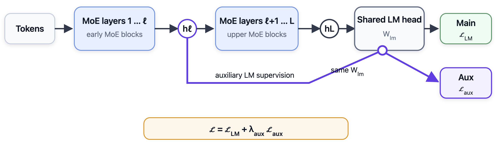
As a proof of concept—and as a further test of our conclusion that the model supplies only a weak signal to lower MoE layers—we injected an auxiliary language-modeling loss after Layer 5 (zero-indexed: the sixth Transformer layer and the fifth MoE layer). Concretely, we connected the hidden states output by Layer 5 directly to the shared LM head:
The LM-head parameters are shared between the main and auxiliary paths. In this experiment, and , giving :
{kind=link}
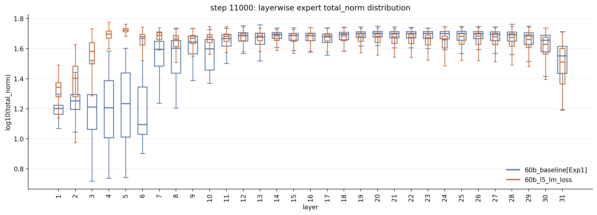
{kind=link}
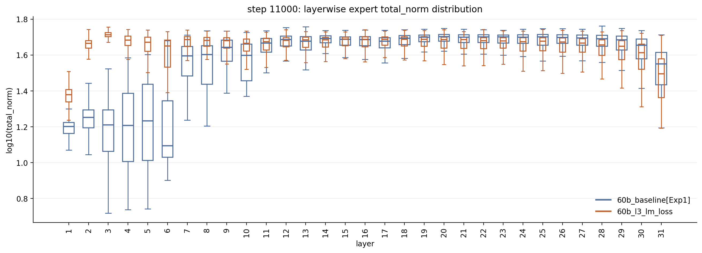
In an 11,000-step short run, expert dynamics improved substantially across the model. Although the additional LM loss was attached at Layer 5, the expert norms in Layers 4 and 3 were also clearly preserved. We then attached the auxiliary loss at Layer 3 and observed a similar effect, with a large improvement in Layer 2 as well. Although the loss was applied at Layer 3, downstream Layers 4 and 5 also stopped collapsing. Intuitively, once Layer 3 assumes an important function and learns a stronger representation, subsequent layers refine that residual representation and therefore receive more signal as well. Even so, moving the auxiliary-loss attachment point from Layer 5 to Layer 3 did not clearly improve the lowest MoE layer, Layer 1.
We therefore attached the auxiliary loss directly to Layer 1, the lowest MoE layer, in the full experiment: , with . We initialize at 0.1 and linearly anneal it to 0 over a fixed interval from the beginning of training:
[Exp6-1]: Anneal from 0.1 to 0 over the first 40,000 steps, then remove the auxiliary LM loss entirely.
{kind=link}
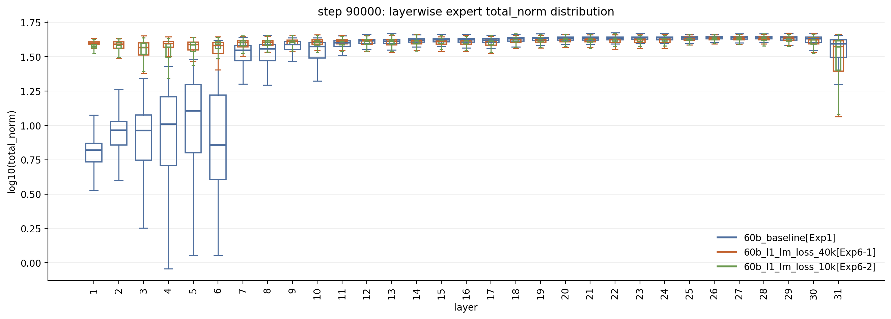
{kind=link}
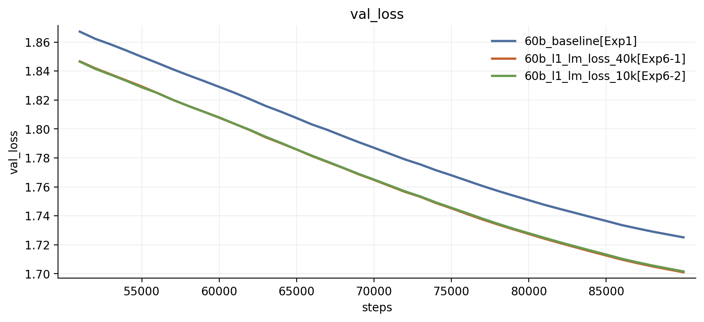
The result is unambiguous: none of the MoE layers collapse.
This auxiliary loss does interfere substantially with pipeline parallelism, while adding cross-layer communication and extra LM-head computation. Our earlier results showed that the initial stage is critical for expert development Section 2.2.1. We therefore hypothesized that the extra LM loss does not need to remain active for long; it only needs to intervene during the critical early stage. This motivated another experiment:
[Exp6-2]: Anneal from 0.1 to 0 over the first 10,000 steps, then remove the auxiliary LM loss entirely.
The result (in Figure 18) is clear:
- Whether the auxiliary LM loss is removed after 10,000 steps or after 40,000 steps makes almost no difference to validation loss or to the development and preservation of expert norms:
- Validation loss is also substantially lower, ~ -0.024.
- MMLU: ; MMLU-Pro: . Table 2. MMLU and MMLU-Pro under layer-wise routed-expert masking before and after LLAL.
{kind=link}
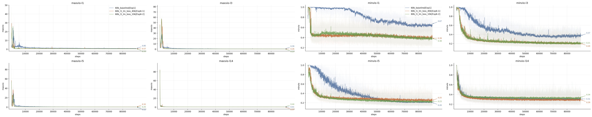
We were also pleasantly surprised to find a large improvement not only in validation loss but also in load balance. Severe early-training overload, reflected by large MaxVio, is quickly flattened. MinVio shows that underloaded experts persist for much less time and that the degree of underloading is greatly reduced.
To test whether the gains from the auxiliary LM loss—in both model performance and healthy expert development—continue to scale, we increased the model size to 180B and trained on more data[Exp7]. Compared to the earlier 60B model configuration, the 180B configuration:
[Exp7]: 32 40 layers; the first layer remains dense; each MoE layer still has 768 routed experts with top-8 activation plus one shared expert; the learning-rate schedule is WSD over 135k steps, with 2,000 warm-up steps and cosine decay beginning at step 117k, for approximately 850B tokens in total. The auxiliary LM loss is attached to the first MoE layer, and is annealed from 0.1 to 0 over the first 4,000 steps.
We did not have enough resources for an additional ablation. Alongside scaling the model, this experiment also shortened the auxiliary-LM-loss window to only 4,000 steps. We additionally adopted WSD to rule out the influence of a cosine learning-rate schedule.
The results are very strong:
{kind=link}
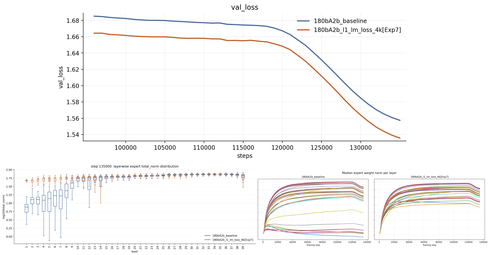
{kind=link}
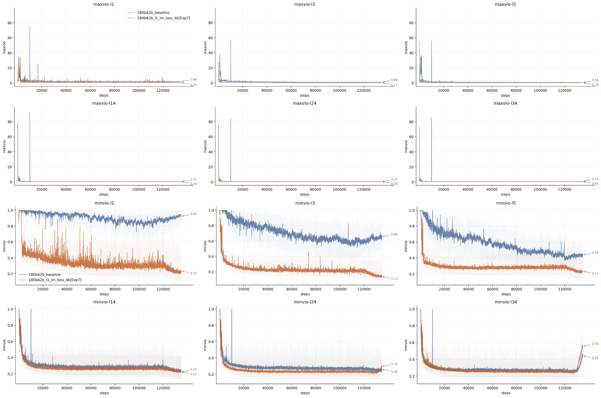
Just as in the 60B model, the auxiliary LM loss works very well with a larger model and more data. Even with its active window shortened to only 4,000 steps, the conclusions remain unchanged:
- Validation loss is substantially lower.
- Expert norms no longer collapse.
- Load balance improves markedly on its own, especially in the lower MoE layers. MinVio shows a large reduction in the degree of underloading, while MaxVio indicates better overall balance and the disappearance of sudden load-imbalance events during training (these events appear as sharp spikes and may arise from instability at a larger MoE scale).
- Subsequent experiments show large improvements in downstream-task metrics as well (Table 2; MMLU: ; MMLU-Pro: ).
Encouraged by these results, we compressed the auxiliary-LM-loss window further, to just 2,000 steps. In other words, the loss is applied to the first MoE layer only during warm-up, with linearly annealed from 0.1 to 0 over those 2,000 steps. We did not have the opportunity to complete the full training run and stopped at 40,000 steps, but the results are equally promising:
{kind=link}
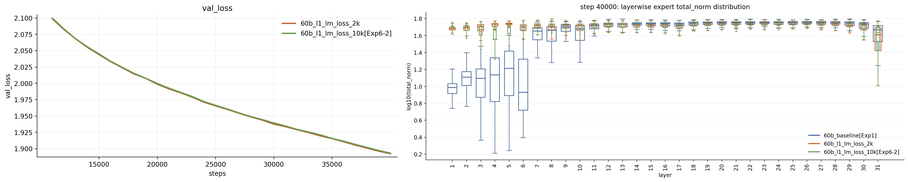
Even when the auxiliary LM loss covers only the first 2,000 steps, by step 40,000 there is no meaningful difference from Exp6-2, which uses a 10,000-step window, in either validation loss or the expert-norm profile.
We also analyzed MMLU and MMLU-Pro using the same routed-expert masking procedure. The auxiliary loss produces clear improvements in downstream metrics, lower-layer MoE utilization, and the model's dependence on those layers:
Table 2. MMLU and MMLU-Pro under layer-wise routed-expert masking before and after LLAL.
| MMLU / MMLU_Pro | 60b_baseline [Exp1] | 60b_l1_lm_loss_40k[Exp6-1] | 60b_l1_lm_loss_10k[Exp6-2] | 180bA2b_baseline | 180bA2b_l1_lm_loss_4k[Exp7] | |
|---|---|---|---|---|---|---|
| Baseline | 0.5162 / 0.1899 | 0.5214 / 0.2119 | 0.5555 / 0.2306 | 0.6205 / 0.2827 | 0.6489 / 0.3302 | |
| Mask L1 Routed | 0.5179 / 0.1910 | 0.4548 / 0.1728 | 0.5235 / 0.2035 | 0.6184 / 0.2843 | 0.6364 / 0.3167 | |
| Mask L1-L2 Routed | 0.5195 / 0.1883 | 0.2576 / 0.1104 | 0.2584 / 0.1105 | 0.6179 / 0.2829 | 0.5390 / 0.2191 | |
| Mask L1-L3 Routed | 0.5165 / 0.1861 | 0.2419 / 0.1127 | 0.2492 / 0.1162 | 0.6170 / 0.2854 | 0.4703 / 0.1907 | |
| Mask L1-L4 Routed | 0.4983 / 0.1794 | 0.2540 / 0.1085 | 0.2422 / 0.1134 | 0.6169 / 0.2798 | 0.3787 / 0.1481 | |
| Mask L1-L5 Routed | 0.3537 / 0.1390 | 0.2559 / 0.1116 | 0.2463 / 0.1099 | 0.6149 / 0.2757 | 0.2616 / 0.1120 | |
| Mask L1-L6 Routed | 0.2426 / 0.1118 | 0.2557 / 0.1120 | 0.2505 / 0.1097 | 0.5913 / 0.2596 | 0.2516 / 0.1137 |
Key Takeaways:
- Connecting lower-layer MoE hidden states to the LM head and using the resulting LM loss as a temporary auxiliary loss introduces a strong, effective learning signal. This produces healthier learning dynamics and stronger specialization among lower-layer experts.
- This auxiliary LM loss does not need to remain active throughout training. Applying it only during the initial stage achieves essentially the same effect, with very little additional overhead. The 180B experiment also shows that the method continues to scale.
- The signal introduced by the auxiliary LM loss not only rescues lower-layer MoE experts, but also substantially reduces validation loss, improves load balance, and increases model capability.
(We have two runs on Muon: Muon w/ LLAL , and a 2T-token run in progress: Appendix C: a long 60b run targeting 2T tokens. All three runs show the superiority of LLAL ).
3.5 Widening the Residual Stream
The weak learning signal in the lower layers may reflect the model's optimization preference: a wide, sparse MoE near the bottom of the network may simply receive too little useful supervision. Our auxiliary LM loss is designed to address this issue. A second possibility is limited information flow—the competition for the residual stream. Pre-norm dilution and depth redundancy have received considerable attention [17, 18, 19], although prior work has focused mainly on diminishing relative updates in upper layers, which can become nearly identity-like and redundant. Recent designs—including mHC, Residual Matrix Transformers, and Attention Residuals—either widen the residual state or allocate cross-layer information dynamically [20, 21, 17]. We therefore incorporated these recent residual designs into our MoE model and evaluated how they affect expert development.
3.5.1 Matrix Residual (RMT)
Given the complexity of mHC, we retained its central idea—systematically expanding the residual state by a constant factor. Inspired by matrix-valued or model-valued recurrent states previously explored for RNNs [22, 23, 24], we widened the residual stream by 4× and represented it as a matrix state:
For the 60B model, the original 1,536-dimensional residual is replaced by . Each Attention or MLP/MoE module first reads a -dimensional representation, performs its computation, and then writes the result back:
.
are module-specific read and write matrices, independently learned for each MoE, Attention, and dense module.
{kind=link}
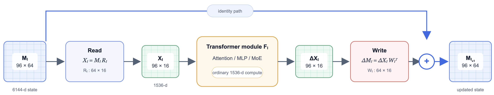
This form of residual-state expansion is deliberately simple and closely related to the Residual Matrix Transformer. Our implementation is even more minimal: it changes only residual capacity and omits the attention-head-specific design of the original RMT (we recommend the original paper for those details). We still refer to this simplified variant as RMT. Relative to mHC, it performs no mixing across residual channels and removes input-dependent reads and writes; each module instead uses its own fixed, learnable matrices for static readout and writeback.
Experiment 8[Exp8] is identical to Exp1 except that every residual stream is replaced by the RMT representation and expanded by 4×:
{kind=link}
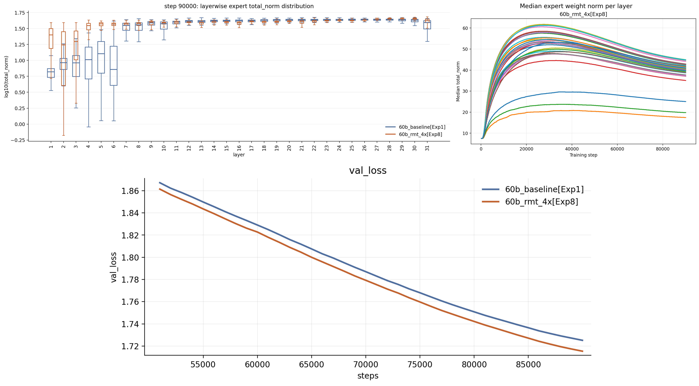
Even this minimal combination of static linear writeback and a wider residual stream gives RMT_4x a clear validation-loss advantage. It also substantially mitigates the shallow-layer norm collapse: the affected region shrinks from the first six MoE layers to Layer 2. However, the collapse is not eliminated entirely, unlike in LLAL.
3.5.2 Attention Residuals
Attention Residuals [17] replace fixed additive accumulation with learned depth-wise attention. Each layer uses a learned pseudo-query to score RMS-normalized outputs from previous layers; the resulting softmax weights are then applied to the original, unnormalized outputs. Related learned cross-layer aggregation mechanisms appear in DeepCrossAttention and DenseFormer [25, 26]. Encouraged by the RMT-4× result, we implemented a block-wise Attention Residual variant using the same 60B configuration. We set the block size to 8—four MLP layers plus four Attention layers, corresponding to one block per four Transformer layers [Exp9]:
{kind=link}
Overall, block-wise Attention Residuals substantially changed expert-development dynamics across the model:
- The lowest layers were no longer the primary collapse hotspot; instead, collapse became most severe in the upper layers.
- Expert trajectories became much more heterogeneous. Unlike in all previous experiments, experts no longer evolved along roughly the same global trend. The pattern is visibly aligned with the block partitioning of block-wise Attention Residuals (block size 8, with four MoE layers per block).
- Validation loss stayed roughly 0.02 below the baseline for most of training, but was abruptly overtaken near the end.
- We cannot yet determine what the source of the late-stage instability is. We conducted two independent training runs, and both exhibited validation loss divergence. In each run, we observed polarization in the higher-layer routers preceding the divergence. The underlying cause remains unclear. Consequently, the reported metrics should be interpreted only as a reference. But the expert norm distribution remains largely unchanged during the occurrence of divergence and instability.
Inline comment
- Hongye JinWe strongly believe the power of atten res from the superiority of it before the collapse. But we need more time to tune it.
In our current experiments, the router output polarization, which overloads a small number of high layer experts and causes the routed outputs to explode in magnitude.
The attention residual softmax residual combiner, whose backward pass is activation-magnitude-dependent and densely couples gradients across all sublayers, amplifies and propagates this local instability into gradient spikes in other components. Under a conventional additive residual connection, the gradients remain local to each sublayer, preventing such local activation explosions from being amplified into global.
We consider tricks like stopping gradient in future experiments. And our version does not apply RMSNorm while calculating the q@k score. We didn’t use the QB to handle load balance either. This might be another reason.
Key Takeaways:
- Modification to residuals does have an impact on early-layer expert development. Widening residuals is also a promising solution.
4. Summary
In conclusion, the weight-norm collapse of early-layer experts under large reveals the complex training dynamics of ultra-sparse MoE, though this collapse cannot be attributed to any single factor. We consolidate our findings and derive methodological recommendations for training ultra-sparse MoE models more effectively.
4.1 Mechanism hypothesis
Based on the full set of experimental results and detailed training inspections, we propose the following hypothesis about the training dynamics:
This hypothesis need more experiment to validate. Some emprical evidence can be found in: Appendix G: empricial observation supporting the hypothethsis.
4.2 Recommendation
Before giving our final recommendation, we added two more experiments:
- Exp3b: The Exp3 Muon + AdamW Router setting, augmented with an auxiliary LM loss attached to the first MoE layer for the first 10K steps.
- Exp4b: The same intervention as Exp3b, but built on the Exp4 Muon + Muon Router setting.
The complete set of experiments is summarized below:
{kind=link}
{kind=link}
Downstream metrics (MMLU / MMLU-Pro)
Table 3. Overall MMLU and MMLU-Pro results across experiments (60b).
| Model | MMLU | MMLU-pro |
|---|---|---|
| 60b_AdamW (280B) | ||
| 60b_AdamW_baseline [Exp1] | 0.5162 | 0.1899 |
| 0.1x Router [Exp2] | 0.5399 | 0.1965 |
| 60b_l1_lm_loss_40k[Exp6-1] - LLAL | 0.5214 | 0.2119 |
| 60b_l1_lm_loss_10k[Exp6-2] - LLAL | 0.5555 (+0.038) | 0.2306(+0.041) |
| 60b_rmt_4x [Exp8] | 0.5301 | 0.1793 |
| 60b_atten_res [Exp9] | 0.5112 | 0.1730 |
| first_6_moe_1e_12[Exp5-1] | 0.5407 | 0.1962 |
| full_1e_12 [Exp5-2] | 0.5402 | 0.2021 |
| 180b_AdamW_experiments | ||
| 180bA2b_baseline | 0.6205 | 0.2827 |
| 180bA2b_l1_lm_loss_4k[Exp7] - LLAL | 0.6489 (+0.028) | 0.3302(+0.038) |
| Muon Experiments with AdamW on Router | ||
| 60b_muon_adam_router[Exp3] | 0.5372 | 0.2089 |
| 60b_m_adam_router_l1_10k[Exp3b] - LLAL | 0.5514 (+0.014) | 0.2156(+0.007) |
| Muon Experiments with Muon on Router | ||
| 60b_muon_muon_router[Exp4] | 0.5485 | 0.2331 |
| 60b_m_muon_router_l1_10k[Exp4b] - LLAL | 0.5622 (+0.014) | 0.2377 (+0.006) |
| 60b_AdamW (ApdxC, 2T) | ||
| 60b_AdamW_baseline, | 0.6248 | 0.2800 |
| 60b_AdamW_l1_lm_loss_4k, - LLAL | 0.6563 (+0.032) | 0.3366 (+0.057) |
Several conclusions are immediately visible:
1. Our LM Loss as Auxiliary Loss (LLAL ) consistently improves validation loss and downstream metrics across optimizer settings. The model learns better with the improved lower-layer expert-development dynamics.
2. Both widening the residual stream (RMT_4x) and allocating it dynamically (Attention Residuals) positively affect the development of lower-layer experts and model training.
Given LLAL’s low cost, together with its favorable scaling behavior—the 180B experiment suggests that the intervention window can be shortened further—we recommend the following:
Other techniques, such as reducing the router learning rate, widening the residual stream and improving data quality, do also help and should be considered. Training dynamics are impacted by many factors, and careful tuning of training hyperparameters or data improvements could be beneficial too. However, we haven’t figured out the concrete mechanisms for all factors.
5. Limitations, Open Questions and Further Discussion
Limitations
- Because of limited compute, most experiments were not trained on enough tokens to determine whether these observations remain valid in a deeply overtrained regime. It is a fundamental limitation. We do not know whether the mechanisms inferred from the current stage remain valid throughout training, how strongly the eventual severity and cause of expert death are related to the mechanisms identified here, or how well the tested solutions will work.
For example, Figure 1 shows that although the first MoE layer does collapse, the second—and especially the third—begin to receive more consistent useful signal and show renewed growth late in training. One possibility is that the first layer is trapped in an attractor created by SwiGLU’s three-way multiplicative structure, making it unusually difficult to receive enough effective signal to recover:
The output of a SwiGLU-MoE expert can be written as:
Gradient of the down projection:
Gradient of the up projection:
Gradient of the gate projection:If the down, up, and gate projections all become small—or enter a low-gradient region—none of them can learn effectively. The down projection needs meaningful activations from the gate and up projections, while the gate and up projections need gradients propagated through the down projection. The three components can therefore lock one another into a dead basin, from which recovery requires a sustained, stable gradient signal.
It is therefore possible that, as long as experts remain reasonably healthy under a suitable optimizer configuration—for example, Muon or AdamW with a smaller —the lower layers will eventually learn meaningful representations and functions after seeing enough tokens. We have not yet tested this regime.
A closer look at Figure 16 reveals tentative signs of late-stage recovery in the momentum of layers that did not collapse as severely, although the bottommost layers (L1–L3) continue to decline:
- AdamW, L2–L3: No recovery. Relative to deeper layers, they continue to deteriorate: the L2 / L15 ratio falls from 0.17% at 40K steps to 0.065% at 80K, while its absolute value is roughly halved again.
- AdamW, L5: It bottoms out and rises slightly (+27%), but this merely tracks the global increase; relative to deeper layers, it remains essentially flat.
- Muon and AdamW, with : Recovery is more visible in boundary layers. For example, Muon L4–L5 roughly double from 40K to 80K steps, outpacing the +48% increase in deeper layers, so their relative ratios do improve. The deepest part of the collapsed region, L2–L3, still merely follows the global rise and remains flat at roughly 1% of the deeper-layer scale—insufficient to call it a recovery.
We have a long run in progress, as shown in Figure 29. It is not finished yet, and the current results partially support the recovery. We will provide more results.
- We did not have the opportunity to systematically combine all potentially relevant factors—including data quality, Adam epsilon, auxiliary losses, optimizer choice, learning-rate schedule, batch size, and other training configurations—and evaluate their joint effect. Furthermore, the issue itself likely stems from a complex interaction among initialization, inter-layer dynamics, hyperparameter settings, data, and model architecture. Although some open-source models appear to treat early layers differently, it remains unclear whether this phenomenon is widespread.
- The method we used for functionality evaluation is limited. It is hard to investigate the function of a specific module in an LLM without any change to the model’s computation. Masking routed experts may also change the numerical stability and result in worse scores. Also, an unchanged MMLU or MMLU-pro score does not generalize to all other tasks.
- We have not yet found a suitable scaling-law setup for either the proposed method or the phenomenon under study. Two questions remain unresolved: which configurations preserve comparable training dynamics across proxy models of different sizes, and how the auxiliary-loss phase should scale with model size. Fundamentally, this is difficult because we are studying a transient training dynamic rather than a predictable steady state.
Open Questions
- The real early-stage dynamics are still not clear. So far, we know that the router dynamics, signal strength, and residuals have an impact on this. But how those factors tune the dynamics needs more investigation, which can provide more insights into better intervention methods. The current method
LLALis still not that natural.
- The last MoE layer (the layer before the LM head) also shows somewhat special behavior compared with the middle layers. It is not directly connected to this paper’s topic, but is worth further investigation.
Further Discussion
- We believe this expert collapse is also related to another topic: the parameter utilization of modern huge LLMs, which is a perennial concern. In this respect, looped Transformers—or, more broadly, Universal Transformers—may avoid this failure mode by construction, assuming their engineering challenges can be resolved. From a broader perspective,
LLALembodies a Universal-Transformer-like principle: tokens that are easy to predict should have less computation invested in them—for example, by being handled early rather than consuming capacity in later layers, leaving the model’s deeper capacity for harder cases. Post-hoc early exit and speculative decoding follow the same general intuition.
- How to intervene during the earliest stage of MoE training may be another research problem—especially if intervention is needed only briefly at the beginning. Initialization is one obvious part of this design space. But according to our results, more complex methods can be applied, such as adaptive methods, training-based methods, data tailored for the starting stage, etc.
- Choosing epsilon may be less straightforward than it appears. Larger batch sizes and greater MoE sparsity may both call for a smaller epsilon. It should be taken more seriously because of its impact on training stability and training dynamics.
Appendices
Appendix A. Quantile-Balance (QB) on a 60b model
With limited computational resources, we ran 7000 steps of training with the 60B configuration using Quantile-Balance to check the trends in early-layer experts under better load balancing.
{kind=link}
{kind=link}
We had another run with a large bias updating speed: to achieve strong load balance. Both have better load balance for early layers. They didn’t have any improvement regarding expert norm.
Appendix B. Other effort on Router Stability Improvement
We also tried two possible modifications to the standard bias updating rule before using QB:
1. Replace the fixed update command with a soft step size. A fixed step can make a nearly balanced router oscillate around equilibrium. The DeepSeek-style rule also treats overload and underload asymmetrically: an overloaded expert should clearly be suppressed first, but it is less obvious that every underloaded expert should receive a full-strength rescue. Consider an extreme case in which one severely overloaded expert receives every token. Every other expert would receive an underload update of , while only the overloaded expert would receive . This can push the biases of experts that were already close to balanced too high, making them collectively overloaded on the next step. The routing pattern then changes sharply; they all receive , and the system oscillates back and forth.
2. Adding momentum is another natural idea. As with conventional momentum, it can reduce the extent to which noisy signals caused by routing jitter interfere with the expert-bias update. Intuitively, if an expert has remained overloaded or underloaded long enough to build up consistent momentum, transient fluctuations should not readily reverse the direction of its bias update.
Soft Update:
There are many possible soft-step formulations. Ours is guided by the following intuition:
Suppressing an overloaded expert already releases competitive routing capacity for all other experts. We should therefore avoid giving every underloaded expert a full bias uplift. Instead, the total uplift allocated to underloaded experts should be tied to the current overload pressure: they should collectively share roughly the same amount of routing pressure released by the overloaded experts.
For expert , define its underload demand as
Define its overload release pressure as
Here, is the fraction by which expert falls short of its target load, while is the fraction of its current tokens that an overloaded expert should release. All underloaded experts share the release pressure generated by the overloaded experts through .
The final update is ; the pseudocode is:
target = load.sum(dim=-1, keepdim=True) / load.shape[-1]
is_under = load < target
is_over = load > target
under = torch.where(is_under, (target - load) / target, torch.zeros_like(load))
over = torch.where(is_over, (load - target) / load, torch.zeros_like(load))
alpha = over.sum(dim=-1, keepdim=True) / (under.sum(dim=-1, keepdim=True) + eps)
cmd = alpha * under - over
bias = bias + γ * cmd
# With momentum
# momentum = beta * momentum + (1.0 - beta) * cmd
# bias = bias + γ * momentumIts behavior across different regimes is:
- Near equilibrium: Both and are small, and , so the update behaves approximately like smooth linear negative feedback. Its magnitude shrinks as the system approaches balance, avoiding the repeated switching caused by fixed commands.
- When only a few experts are dead or severely underloaded: Total underload demand is small and remains close to 1, so these experts can still receive a strong uplift and re-enter the top-K promptly.
- When many experts are underloaded at once: Total underload pressure grows, so automatically decreases. The experts must share a limited amount of release pressure, preventing many of them from simultaneously receiving an update near and crossing the top-K boundary together.
- When an expert is severely overloaded: Its release pressure approaches 1, so it is still strongly suppressed, but in a bounded way that does not grow without limit with the overload ratio. This avoids sharply increasing the biases of every other expert at the same time.
Results:
{kind=link}
{kind=link}
The validation-loss difference from the baseline is very small. Expert collapse does not improve noticeably.
With Momentum:
Momentum-based expert-bias updates have also been used in open-source models, such as Arcee/TrinityLarge. Momentum may reduce noise in the bias updates, but it may also change how quickly the router reaches balance. The training results are shown below:
{kind=link}
{kind=link}
Again, we see no clear improvement in validation loss or expert collapse, while load balance becomes slightly worse.
Appendix C: a long 60b run targeting 2T tokens
To further confirm the effectiveness of our proposed LLAL, we push the setting further in the overtrained regime. We set this run to target 2T tokens, with the batch size / LR changed accordingly. Also, because this is a much longer run, we set in this experiment to have a better understanding of the impact of . The baseline is [Exp10] and LLAL [Exp10b] is applied to layer 1 during the first 4,000 steps (the first MoE layer). Other configurations still follow the 60b config:
{kind=link}
The validation gap is . On MMLU, LLAL got , higher than the baseline’s . On MMLU-pro, LLAL got , higher than the baseline’s . Load balance is also improved a lot, whether measured by MaxVio for overload or by MinVio for underload.
Meanwhile, with , compared to Exp1, we find the baseline run’s expert norm is still within a normal range throughout this long run. Also, as we supposed before, layers 3 ~ 5 began receiving useful signals as the training progressed. The expert median dynamics (top right) can support this. The momentum level investigation tells the same thing. In Figure29, after excluding the effect of weight-norm decay (the third row), the momentum of layers 3~5 began increasing after step 80k, and the trend becomes more obvious with more steps. Layer 2 was silent for longer but also began increasing later. However, layer 1 remains dead. 💬
Inline comment
- XiaotianThe relationship between weight decay, weight norms and grad norm is also discussed in this paper.
All layers are healthy after the LLM aux loss is applied —— LLAL is shown in the right column.
{kind=link}
Appendix D. Muon vs. AdamW: Estimating Equivalent Epsilon ( in Muon ≈ in AdamW)
In both Muon and AdamW, prevents the normalization denominator from becoming too small. However, the two epsilons act at fundamentally different scales and enter very different update rules, so their numerical values are not directly comparable. Under a set of reasonable approximations, we can estimate comparable intervention thresholds and show why the common defaults— and —may not constitute a fair comparison.
AdamW normalizes each parameter element independently:
Thus, when , the normalized update for that element begins to be noticeably attenuated.
Muon instead begins by normalizing the entire momentum matrix by its Frobenius norm:
It then applies Newton–Schulz iterations to approximate orthogonalization. Consequently, is compared against the Frobenius norm of the entire matrix, not the gradient RMS of an individual element. Even when , the subsequent Newton–Schulz iterations continue to amplify small singular values, so the update does not vanish immediately.
1. Mapping Muon’s matrix-level epsilon to elementwise RMS
Consider with and , the expert-matrix shape in our 60B configuration, and let . Without assuming that is low-rank, take its effective rank to be . If the matrix energy is distributed roughly across these singular directions, then
When , the typical singular value entering the Newton–Schulz iteration is approximately .
Near zero, one Newton–Schulz step has a linear gain of approximately for small singular values. After five iterations, the cumulative gain is about , giving .
If we define “material attenuation by epsilon” as the final singular value reaching only about half of the normal orthogonalized scale, i.e. , then
For this matrix shape, therefore, does not substantially attenuate Muon’s orthogonalized update until the elementwise RMS of the momentum matrix falls to the order of .
2. Mapping Muon momentum RMS to AdamW gradient RMS
The obtained above is not yet an equivalent AdamW epsilon. AdamW’s tracks the temporal RMS of the raw gradient, whereas Muon’s is a momentum-smoothed gradient.
If momentum uses the EMA form and is dominated by temporally independent, zero-mean noise, then at stationarity
With , this factor is , so .
Substituting gives . Since AdamW typically has , we obtain:
Here, “equivalent” does not mean that the two optimizers are mathematically identical. It means only that epsilon begins to materially attenuate their normalized updates at roughly the same underlying gradient scale. The scale correspondence is , , and .
3. RMS matching does not change epsilon’s relative intervention strength
The Moonshot/Kimi Muon variant used in our experiments also applies RMS matching, which aligns Muon’s update RMS with AdamW under normal conditions. However, the matching factor multiplies both the unattenuated update and the update already suppressed by epsilon, so it does not change epsilon’s relative attenuation. In other words, RMS matching aligns the normal update magnitude; it does not give epsilon the same meaning in Muon and AdamW. For a expert matrix in our 60B configuration, is closer in practical intervention strength to , not AdamW’s common default of .
Finally, if is strongly low-rank, its energy is concentrated in fewer and larger dominant singular values. Newton–Schulz preserves those dominant directions more readily, making Muon’s epsilon even less influential; under this interpretation, the corresponding AdamW-equivalent epsilon could be lower than .
Appendix E. Shared vs. Routed Experts: Estimating the Relative AdamW and
We can estimate this scale gap directly from routing sparsity. Let be the number of routed experts, the number selected per token, and the total routed-expert scaling factor in the MoE output. Under approximately balanced routing, each routed expert is selected for a fraction of all tokens. If the selected routing weights are roughly normalized, the typical coefficient applied to one selected expert is
For one parameter coordinate, write the per-token local gradient as , where is the coherent component and is zero-mean noise with variance . If the loss is averaged over tokens, the shared- and routed-expert gradients are approximately
Ignoring second-order correlations between routing decisions and local gradients, their second-moment scales are
Thus, the relative natural AdamW scale is
Noise-dominated limit. When token gradients largely cancel within a batch, , and
The ratio increases as the numbers of routed and activated experts increase. For our configuration, , , and , giving
Mean-dominated limit. When token gradients are highly aligned and , the coherent component adds linearly and
Real training lies between these two limits. In particular, the very small and rapidly decaying momentum of lower-layer routed experts suggests that their effective learning signal is not strongly coherent across steps. They are therefore more plausibly in a noise-dominated or mixed regime than in the fully mean-dominated limit. For our setting, a practical estimate of is therefore roughly , rather than the extreme limit, which also aligns with our observation.
Thus, if , the noise-dominated estimate gives , while the fully mean-dominated limit gives . These estimates are approximate—routing decisions correlate with token gradients, gate weights are unequal, and shared and routed experts may develop different activation statistics—but they provide a useful order-of-magnitude calibration.
Appendix F. Open-Source Models
How to measure whether a MoE model is well trained is an open problem. Evaluation metrics are not sufficient. We leveraged many different lenses to analyze open-source models. In this section, we will share some findings from recent larger open-source MoE models.
DeepSeek-V3 / Ling-1T:
{kind=link}
Both use AdamW, sigmoid, aux-loss-free balancing, top-8/256, and 1 shared expert. DeepSeek-V3 sets its first 3 layers as dense layers, and Ling-1T uses 4 dense layers before MoE layers. They have expert norm distribution trends similar to those in our AdamW experiments.
MiMo-v2.5-pro:
{kind=link}
{kind=link}
MiMo-v2.5-pro uses AdamW, sigmoid, aux-loss-free balancing and top-8/384. There is no shared expert. It uses one dense layer as the first layer. Observations:
- There is a weird cut-off around layer16. Experts in layers before this line have 10x smaller weight norms.
- We collected real hidden states and found the routed experts’ outputs have a minor impact on the residual stream. As shown in the above figure, the l2 norm ratio of the residual to the routed expert output in layer1 ~ layer 15 is amazingly large: 500~10000. But this ratio rapidly decreases to a normal range similar to other models after layer 17, which aligns with the expert norm distribution.
In our further ablation, we found masking the output (by setting it to zero) from routed experts in consecutive early layers has nearly no impact on MiMo-v2.5-pro output quality.
We checked the parameter structures of those early layers (<L15) and found that the cosine similarities of gate projections from different experts within these MoE layers are extremely high: median cosine similarity among 384 experts in L1 is 0.497, and >90% of pairs have > 0.3 similarity:
{kind=link}
It is abnormal since randomly initialized experts should have ~0 similarity. Further investigation reveals that such high similarity is not from upcycling. Those layers’ gate projections are low-rank and share a common component —— this component is nearly rank-1. After SVD, this component is .The left singular vector is an all-ones vector and the right singular vector is concentrated on 5 directions, and .
This could be related to phenomena like massive channel. Its function is like capturing the massive channel output from previous layers. For most inputs, the gate projection will just close the output with a nearly zero gating value —— masking out any meaningful output and muting all 15 layers.
MiniMax-M2:
{kind=link}
MiniMax-M2 uses AdamW, sigmoid, aux-loss-free balancing and top-8/256. No shared expert. It does not use any dense layers and all layers are MoE layers.
{kind=link}
It has a unique pattern: its gate projection trend is quite different from the up / down projection trends, while other models usually have similar trends across the three projections. We found its first 3 MoE layers also have low-rank gate projections, and the rank-1 directions are mutually collinear, which is similar to MiMo-v2.5-pro. This could be a problem while we didn’t see other abnormal signals. The up / down projections look healthy for MiniMax-M2.
StepFun-3.5-flash / Hy3 / GLM-5/MiniMax-M3/DeepSeekV4-pro / Kimi-K2:
{kind=link}
The 6 models don’t show abnormal behaviors regarding MoE health in our tests.
DeepSeekV4-pro uses Muon, sqrtsoftplus as the routing function, aux-loss-free balancing, top-6/384 and 1 shared expert. Its first 3 layers are hashed-MoE layers. The reason behind this is unclear; possible causes include imbalance in early layers or collapse.
Kimi-K2 uses Muon, sigmoid, aux-loss-free balancing, top-8/384 and 1 shared expert. Its first layer is a dense layer. Each expert’s bias term is zero-centered, which has no impact on the expert selection.
StepFun-3.5-Flash uses Muon, sigmoid, aux-loss-free balancing, top-8/288 and 1 shared expert. Its first 2 layers are dense layers. They also mentioned that some layers’ weight norms or output norms could collapse to very small values in their technical report [35].
GLM-5 uses Muon, sigmoid, aux-loss-free balancing, top-8/256 and 1 shared expert. Its first 3 layers are dense layers.
As for MiniMax-M3 and Hy3, they never reveal detailed information about what optimizer is used. But according to the structure of their parameters, an educated guess is that both MiniMax-M3 and Hy3 use the Muon optimizer.
Hy3’s config is a bit conservative. It uses top-8/192, 1 shared expert, sigmoid, and aux-loss-free balancing. Its first layer is a dense layer. Each expert’s bias term is also zero-centered.
MiniMax-M3 uses top-4/128, 1 shared expert, sigmoid, and aux-loss-free balancing. Its first 3 layers are dense layers. MiniMax-M3 also uses gpt-oss-style SwiGLU —— there is a residual along with the up projection which may help with the gradient flow.
All models use Muon and their layers pass our tests, which may imply what we mentioned in the limitation section . However, all these open-source models are not as sparse as ours and set more of their early layers as dense layers, except Kimi-K2 (just one, same as us).
Qwen-3.5-397B:
{kind=link}
Qwen3.5-397B-A17B uses AdamW, softmax router, 1 shared expert, top-10/512, and aux loss for load balancing. It’s a full MoE model and does not use any dense layers. From the figure above, we could see it has a few early collapsed layers. In our mask ablation experiments, its first few layers have a minor impact on the model’s output quality.
Qwen3.8-Max:
{kind=link}
Qwen3.8-Max has similar configs. It uses AdamW, softmax router, 1 shared expert, top-10/512, and aux loss for load balancing. It’s a full MoE model and does not use any dense layers. From the figure above, we could see it has a few early collapsed layers and higher layers show partial collapse (different from early layers).
{kind=link}
One more interesting finding is that the L12-L43 (32 layers) seem like a copy or layer extension from L44-L75. The pair-wise layer similarity is quite high as shown below. We also did an analysis through the lens of each expert’s channel, and the similarity is significant.
Kimi-K3:
{kind=link}
Kimi-K3 has significant structure. It uses blocked attention residual with a block size of 24 modules (12 FFNs). It uses Muon, latent MoE, 2-shared experts, top-16/896, sigmoid, and aux loss free quantile-balancing (QB). Its first layer is a dense layer.
We can see the expert norm distribution has a correlation with the attention residual’s block. We didn’t find any abnormal signals in K3. Although the first few layers and Block 2 (L24–L36) seem to have less impact on output quality, this is different from K2, whose layers are sensitive to masking or perturbations.
{kind=link}
{kind=link}
{kind=link}
Also, we cannot necessarily say that this is a bad sign, but we found that the expert-selection override ratio between routing with and without bias is much higher than in other models. In particular, even the top-1 choice from the router score is overridden a lot (Figure E1, > 70% of top-1 experts are kicked out in some layers). Sometimes, experts ranked low by the router score ( > 400, Figure E2) are finally selected by the router with bias added. Expert index perturbation (expert shuffule) test also shows layers whose selection changes a lot with bias added is less sensitive to index pertubation.
This could be related to the large total number of experts and the number of selected experts, or may come from the quantile-balancing. Additionnaly, we analyze our top8/768 experiments as a reference for ~800-expert MoE behavior.
{kind=link}
{kind=link}
{kind=link}
The proposed LLAL seems to stabilize the router selection too.
Appendix G: empricial observation supporting the hypothethsis
It is hard to validate the hypothesis at this time, since we haven’t figure out the root cause of the hypothesized function transferring. Some empricial observation during model training can partially support this hypothethsis.
Metrics
- Contextual share: for each token, the ratio of within-token variance of a module's outputs across contexts to total output energy (squared L2). Values near 0 indicate context-insensitive outputs; 0.6–0.7 indicates strong contextualization. It measures sensitivity only, not usefulness.
- Decoding cross-entropy: the residual stream at a given depth is passed through the model's own final normalization and LM head; lower values mean more directly readable predictive information (nats).
- Ablation loss increase: zeroing a module's output at inference; measures true causal dependence (nats).
- Linearized removal increase: subtracting one source's output from the
residual stream before decoding through the LM head; measures the directly readable content carried by that source, but does not recompute downstream compensation and is therefore not a true ablation (nats).
Potential Dynamics as Training Progresses:
The lower layers first develop genuine functionality:
At s500, zeroing the first MoE layer's routed output raises the evaluation loss by 0.258 nats — the largest single-layer effect at that point. Its contextual share is still 0.015–0.13 (token-level content) while lower-layer attention already reaches 0.3–0.6, and the stream before layer 5 decodes at 8.65 nats. By s1000, the routed outputs of layers 4–5 reach contextual shares of 0.16/0.28 and carry ≈1 nat of directly readable content.
Then inter-layer competition happens. It is probable that training preserves other pathways while continually overwriting the lower layers' overlapping contributions.
The data are consistent with reallocation. The first MoE layer's ablation increase falls from 0.258 (s500) to 0.031 (s2000); its decoding cross-entropy becomes worse (10.97→11.55) while layer 15 improves (5.88→4.88); linearized analysis shows directly readable content declining simultaneously in the routed experts, dense layer 0, and the shared expert, while other sources gain ≈0.9 nats — the network's predictive content does not degrade; it moves.
Attention degrades later, as a consequence. Lower-layer attention holds contextual shares of 0.37/0.26 at s2000 and falls to 0.03/0.02 only by s5000, its parameter gradients dropping ~10³× between s3000 and s7000 — after the feed-forward modules lose their causal role. The degraded output remains large in magnitude but nearly context-insensitive (though not necessarily identical across tokens), and attention adjacent to surviving feed-forward layers is preferentially preserved: attention stops learning once its features lose stable downstream consumers.
The auxiliary loss creates a protected demand. The auxiliary head predicts the next token from a representation near the first MoE layer; its error can be reduced only by the network prefix and the shared LM head — layers 2–31 cannot pay it on the prefix's behalf. Its key function is therefore not larger gradients but a local demand the upper layers cannot take over.
The lower-layer routed contextual share rises to 0.4–0.7, lower-layer attention to 0.4–0.6 at relative magnitude ≈0.85, and the stream entering the lower feed-forwards from 0.02–0.10 to 0.40–0.56: the full pathway — attention supplies context, lower experts process it, upper layers consume the features — stays intact.
After removal, part of the direct function is handed back; the mediating role persists.
Decoding cross-entropy rebounds by 0.5–0.9 nats and the linearized direct contribution falls from +4.6 to +2.0 nats — part of the direct predictive function formed in the window migrates to depth anyway. But the true ablation increase keeps rising after the head is gone (0.33→0.39), the output contextual share holds at 0.457 from s10000 to s80000, and the overall loss advantage keeps widening; 2k, 10k, and 40k windows end nearly identically, so the decisive effect occurs early.
In summary, the auxiliary loss lets the lower layers establish a stable role as suppliers of contextual features; once the upper layers rely on those features, the main loss maintains the pathway by itself — removing the lower layers would first require a parallel circuit that recomputes the same features, and before one exists, disruption immediately raises the loss, so local gradient descent preserves the established division of labor.
References
[1] DeepSeekMoE: Towards Ultimate Expert Specialization in Mixture-of-Experts Language Models. arXiv:2401.06066
[2] OLMoE: Open Mixture-of-Experts Language Models. arXiv:2409.02060
[3] LayerSkip: Enabling Early Exit Inference and Self-Speculative Decoding. ACL 2024
[4] Muon is Scalable for LLM Training. arXiv:2502.16982
[5] Symmetry-Compatible Principle for Optimizer Design: Embeddings, LM Heads, SwiGLU MLPs, and MoE Routers. arXiv:2605.18106
[6] Depth scaling and Muon enable balanced expert usage in MoE training. OpenReview
[7] On the SDEs and Scaling Rules for Adaptive Gradient Algorithms. arXiv:2205.10287
[8] Scaling Exponents Across Parameterizations and Optimizers. ICML 2024
[9] Same Pre-training Loss, Better Downstream: Implicit Bias Matters for Language Models. arXiv:2210.14199
[10] On the Effect of Pretraining Corpora on In-context Learning by a Large-scale Language Model. NAACL 2022
[11] Train-before-Test Harmonizes Language Model Rankings. arXiv:2507.05195
[12] ModuleFormer: Modularity Emerges from Mixture-of-Experts. arXiv:2306.04640
[13] Advancing Expert Specialization for Better MoE. arXiv:2505.22323
[14] Synergistic Intra- and Cross-Layer Regularization Losses for MoE Expert Specialization. arXiv:2602.14159
[15] Confident Adaptive Language Modeling. NeurIPS 2022
[16] Draft & Verify: Lossless Large Language Model Acceleration via Self-Speculative Decoding. ACL 2024
[17] Attention Residuals. arXiv:2603.15031
[18] The Curse of Depth in Large Language Models. arXiv:2502.05795
[19] ShortGPT: Layers in Large Language Models are More Redundant Than You Expect. arXiv:2403.03853
[20] mHC: Manifold-Constrained Hyper-Connections. arXiv:2512.24880
[21] Residual Matrix Transformers: Scaling the Size of the Residual Stream. arXiv:2506.22696
[22] M²RNN: Non-Linear RNNs with Matrix-Valued States for Scalable Language Modeling. arXiv:2603.14360
[23] xLSTM: Extended Long Short-Term Memory. arXiv:2405.04517
[24] Learning to (Learn at Test Time): RNNs with Expressive Hidden States. arXiv:2407.04620
[25] DeepCrossAttention: Supercharging Transformer Residual Connections. arXiv:2502.06785
[26] DenseFormer: Enhancing Information Flow in Transformers via Depth Weighted Averaging. arXiv:2402.02622
[27] The Myth of Expert Specialization in MoEs: Why Routing Reflects Geometry, Not Necessarily Domain Expertise, arXiv:2604.09780
[28] SD-MoE: Spectral Decomposition for Effective Expert Specialization, arXiv:2602.12556
[29] Epsilon ϵ in Adam optimizer, Nvidia Doc
[30] Deconstructing What Makes a Good Optimizer for Language Models, ICLR2025
[31] Small-scale proxies for large-scale Transformer training instabilities, ICLR2024
[32] AdaGC: Enhancing LLM Pretraining Stability via Adaptive Gradient Clipping, ICML2026
[33] Adaptive Preconditioners Trigger Loss Spikes in Adam, ICML2026
[34] A Theory on Adam Instability in Large-Scale Machine Learning, arXiv:2304.09871
[35] Step 3.5 Flash: Open Frontier-Level Intelligence with 11B Active Parameters, arXiv:2602.10604
Citation
@misc{jin2026llalmoe,
title = {Mitigate Silent Expert Death In Ultra-Sparse MoE},
url = {https://alltoall.notion.site/save-lower-layer-moe-experts-llal},
author = {Jin, Hongye and Li, Linwei and Han, Xiaotian and Liu, Xin and Wen, Haoyang and Zhao, Tuo and Yin, Qingyu and Huang, Binxuan},
journal = {Notion Site},
year = {2026},
month = {July},
}We are still actively investigating the training dynamics. If you have any questions or feedback, please feel free to contact us at mooler0410@gmail.com.
Inline comment